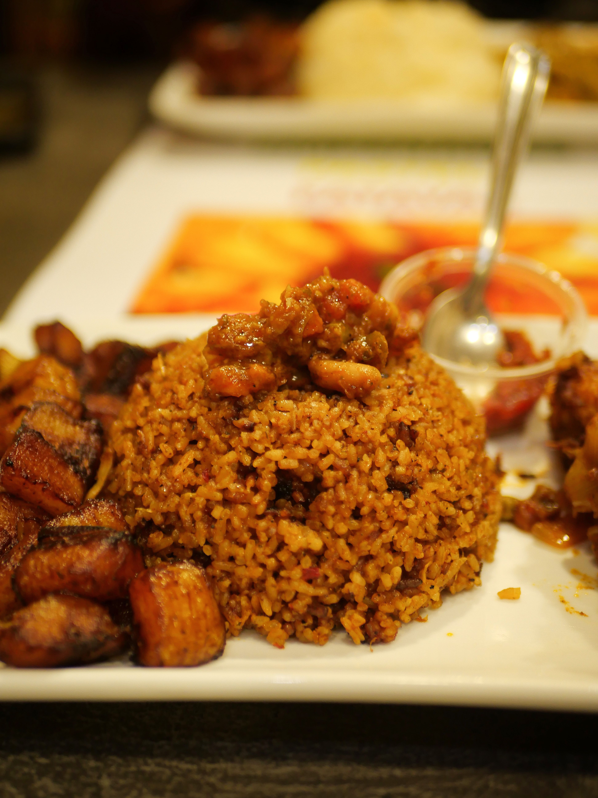
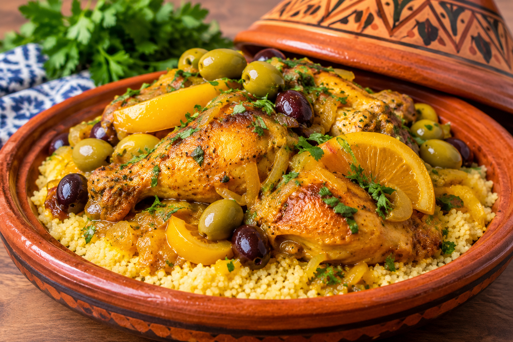
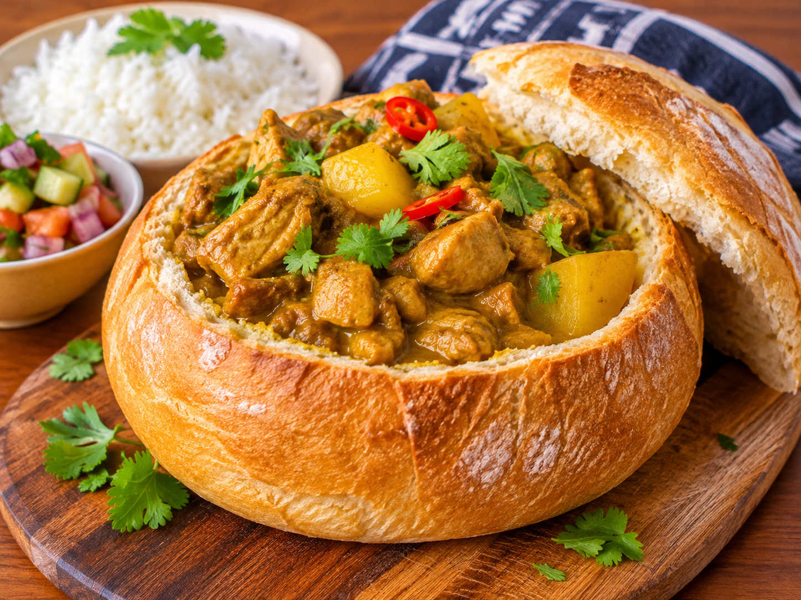

Culture01
The quiet revival of west Africa's ancient grains
Fonio is moving from rural kitchens to contemporary menus, without losing its roots.
Read story →From smoky jollof to slow-braised tagine, explore the dishes, regions and traditions that make African food one of the richest in the world.
Browse recipesthree dishes, three corners of the African continent. Open one to see the full recipe

Long-grain rice simmered in a bright tomato and pepper base.

Slow-braised chicken perfumed with saffron, olives and preserved lemon.

A hollowed loaf filled to the brim with fragrant Durban curry.

Ethiopia's celebration stew: chicken slow-simmered in berbere with boiled eggs.
Climate, trade and history shape what each region cooks.
Across the continent, a meal is how people welcome guests, mark a wedding and remember family. Recipes travel in memory and are passed from cook to cook, long before they are written down.
Fresh from the continent
Fonio is moving from rural kitchens to contemporary menus, without losing its roots.
Read story →A ritual of hospitality finds new expressions across generations and borders.
Read story →Salty, floral and deeply aromatic: a small jar with a vast culinary history.
Read story →